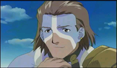

| Tsukasa is the main character in .hack//SIGN. He’s a contradiction in many ways: he’s a Wave Master (Juumontsukai or spell-caster) who doesn’t use magic; he’s wary but kind; shy but fierce. He’s clearly suffered some sort of trauma in the past, but never speaks of it. And most contradictory of all, Tsukasa may not even be a “he” at all… The story of .hack begins when Tsukasa finds himself locked inside the online game The World. Not only can he not log out, he doesn’t even seem to see the computer he should be playing on! Wandering around disoriented, he attracts the attention of the Scarlet Knights, a group of system moderators. Luckily, he has allies: a silent cat-like character named Maha, a voice, and a glowing, dumbbell-shaped “guardian” with a mysterious power that seems to affect players even outside of The World. But what do they want? Why is the area they haunt inaccessible to normal users? And who is the ethereal child who sleeps there? |
| Mimiru is easily overlooked. She’s the cute, always-cheerful character who’s along for comic relief. Right? Wrong. Mimiru is cheerful, and she is cute, but she’s also determined and far more intelligent than others give her credit for. Her judgment is usually on the mark, which makes up for all the esoteric pop-culture references tossed around by the older players - notably Bear - which she misses as a result of simply not being old enough. And her less “intellectualized” approach to "The World" may actually be an advantage; she follows her heart and doesn’t allow herself to be wracked by self-doubt. Though Mimiru doesn’t hit it off immediately with Tsukasa, she perseveres and becomes his loyal friend. Mimiru’s a Heavy Blade User, and while not as powerful as Sora or Kurim, she can defend herself and others in most situations. And while she doesn’t jump into battle, once begun she never gives up – even when the odds are against her. |
| BT is a female wavemaster who always seems to have a hidden agenda. Sometimes she seems to be helping out the heroes, sometimes the villains. But one thing that seems to always be on her mind is finding The Key of the Twilight. She is very determined to learn it's secrets, and will pretty much say or do what she had to do get the information. BT is so determined that it does not seem to bother her that she will play other players against each other in order to get what she wants. BT is not a cold hearted gal though, often she seems to flirt and play the men around her. As if this is how she really is, or her just having fun in an online world is her secret to know. BT is one of the adult players of "The World" and her maturity sometimes shows when trying to deal with the younger generation of players. She keeps her real life side to herself, and does not want to meet others when asked online to meet offline. BT is a independent woman, and seems to only trust herself. |
|  | Bear is the self-described "old man" of the show, and likes to help out new players - in fact, he occasionally exasperates Mimiru with his paternalistic attitude. He's a Blademaster with a fairly typical character model, or "skin." He's quiet about his profession, but it evidently leaves him with a lot of time to play video games and even to look for clues offline. Bear is old enough to remember playing non-online RPGs before "The World" was invented, and that still influences his thinking. He seems to romanticize gaming, in a wistful, "what-if" fashion and likes to toy with the idea that games have their own reality, even if he's grounded enough to know better. Bear tends to trust people that others might not, but he's usually right in his appraisal of people. Bear and BT share an understanding, although it occasionally seems that they understand different things. In the real world Bear seems to have a son, but they don't always seem to be on the best of terms. |
| Subaru is the leader of the Scarlet Knights (Crimson Knights). She has some system powers - but she is not a moderator nor a system administrator. She is a gentle character and rarely fights- hence her level is very low. She is often the voice of reason and peace - a character that wants all to be happy- yet "right." She spends a lot of time in "The World" - most likely to escape the real world. Subaru is not your typical online RPG'er. She does not play like the rest, she doesn't even seem to ever battle monsters or play the game as it is traditionally thought to be played. Subaru appears to be rather living in an alternate world and takes things that happen there very serisously. |
| Sora is one of the games PK's (Player Killer), he is one of those characters in online games that lives on killing other people's characters and other such mischief. Sora also is looking for The Key of the Twilight- although claims he does not want to use it- just be the one to find it. He always wants to know player's member address when he meets them (most likey to find them when alone to PK them) and will continue to pester them to get it. He has been both helpful and harmful to our heroes, more out for his own personal gain that to help anybody. Sora likes to make trouble - often double-crossing those he seems to "help." Why he does what he does is not always apparent - but was the ultimate punishment he received really worth it? |